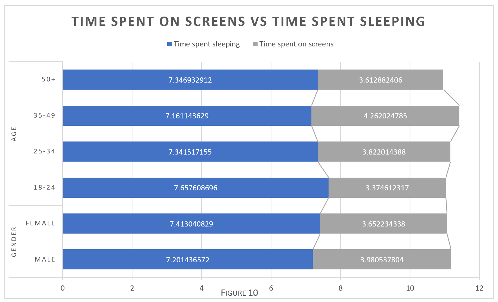

Data Averaging
order to find whether there is a correlation between sleep time and screen time, as well as find the effect of age/gender in these circumstances – averaging of values must be performed. Both the average sleep and screen time had to be found for each age and gender, so that further details could be analysed from the information. An example of this averaging process is as shown, using the cells and formula:

Concluding Comparison
The above figure 10 shows the results of comparing the average time spent on screens against the average time spent sleeping, in order to find whether the original hypothesis was true. Upon analysing the information shown above, it is evident that although the values are very small – The instances of greater screen time results in less sleep time. The data on figure 10 is not extremely clear in terms of supporting the hypothesis, however when looking at the specific relationship between sleep and screen data for each row the correlation is evident.
Approximation Calculations
Figure 11 also shows the raw data in order to view the correlations between the data. Ultimately, this data supports the hypothesis that exposure to blue light does indeed have an effect on sleep which in the general case results in less sleep in the case of more screen time.
In order to analyse the trustworthiness of the data output from the original dataset, the standard deviation of the values was found utilising the formula:
Figure 12 shows the standard deviation of the values that were utilised to produce the graphs comparing screen time and sleep time. From the results shown, it turns out that the standard deviation values calculated are comparatively quite small – which shows that the data output is actually quite trustworthy despite the correlations between sleep and screen time being very minute. Ultimately, these values suggest that the data produced has little variation, therefore meaning the approximation as a mean is more accurate.